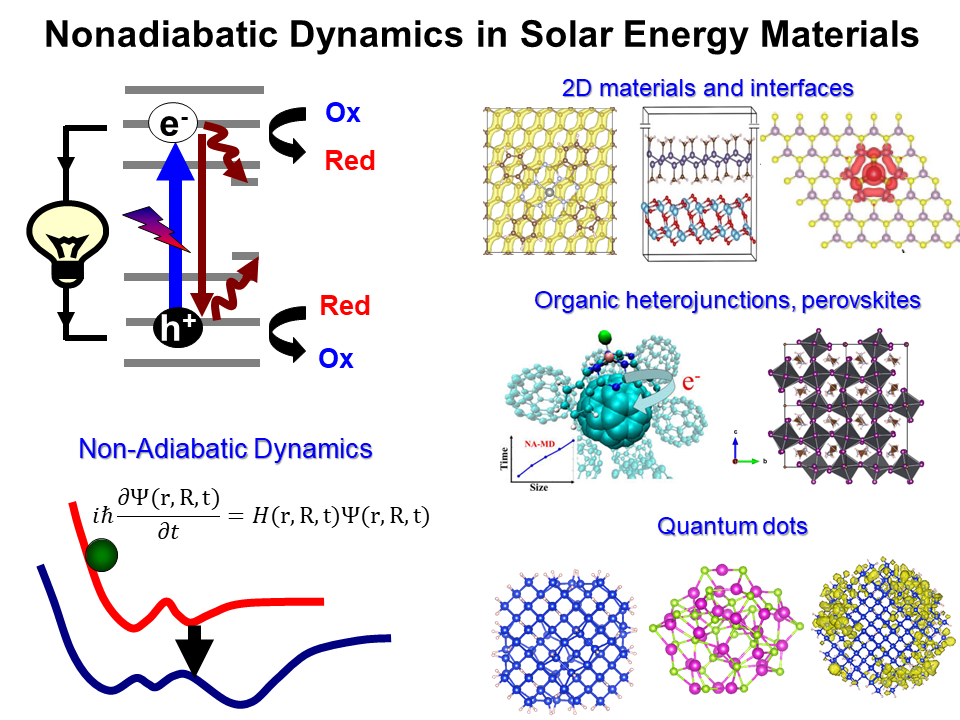
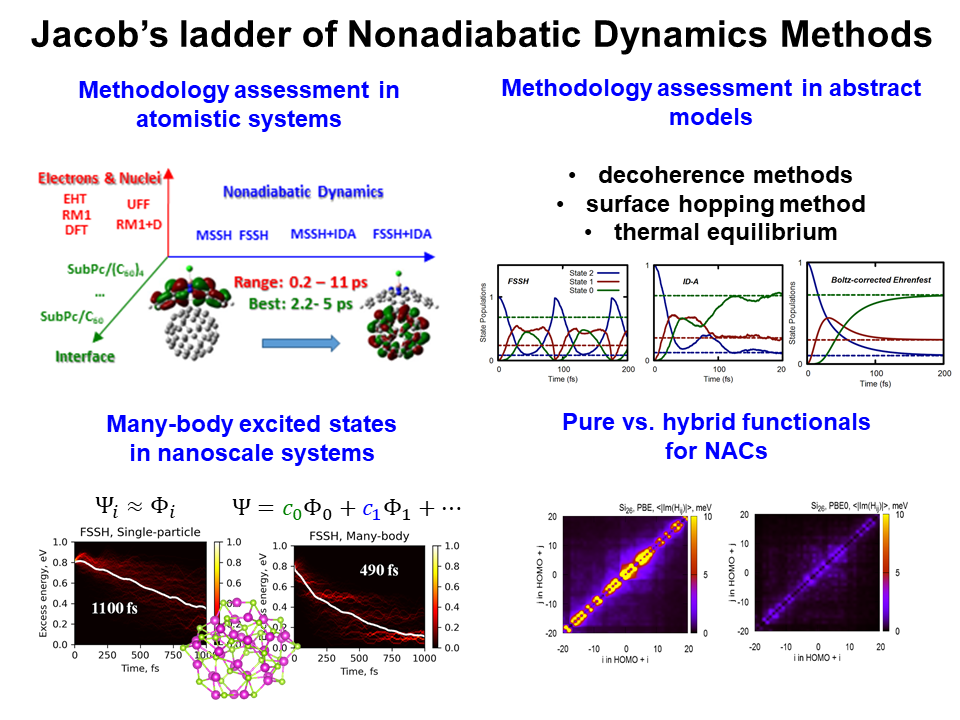
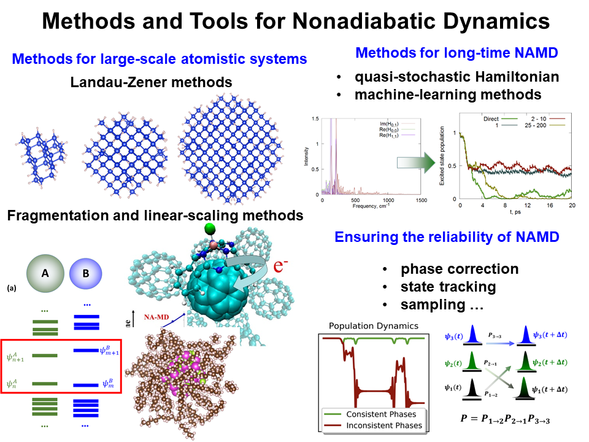
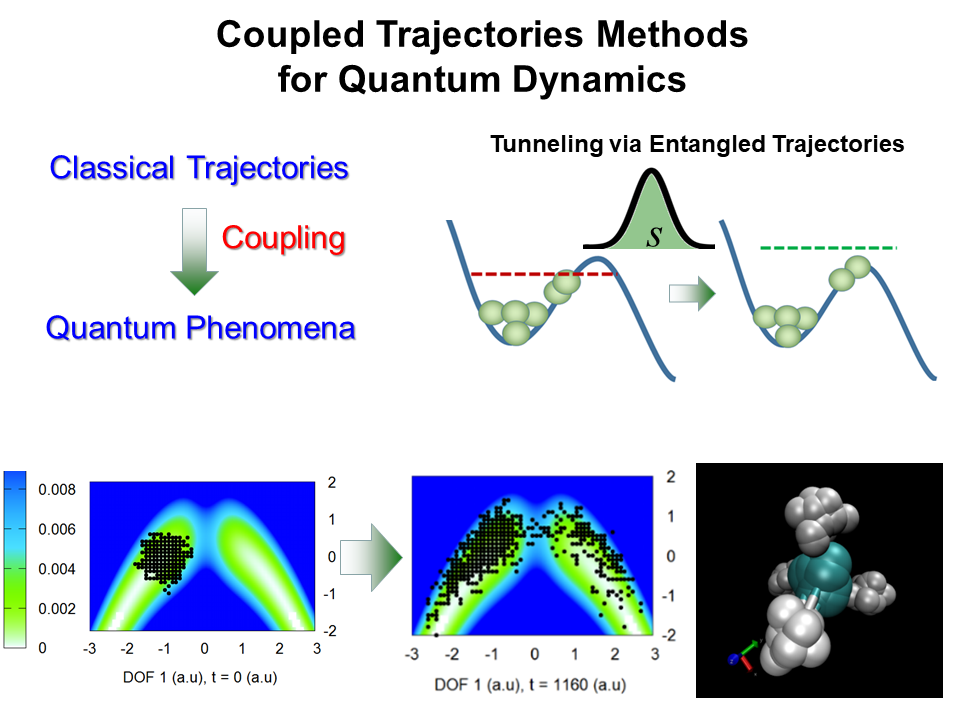
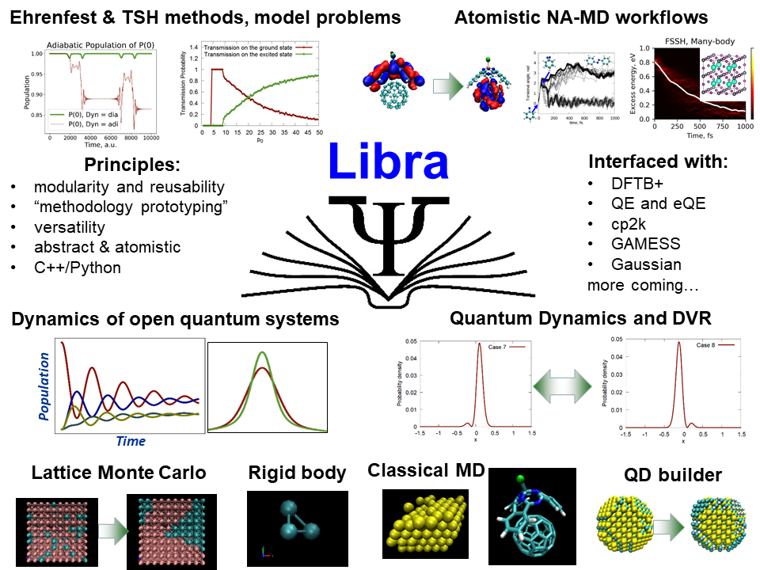
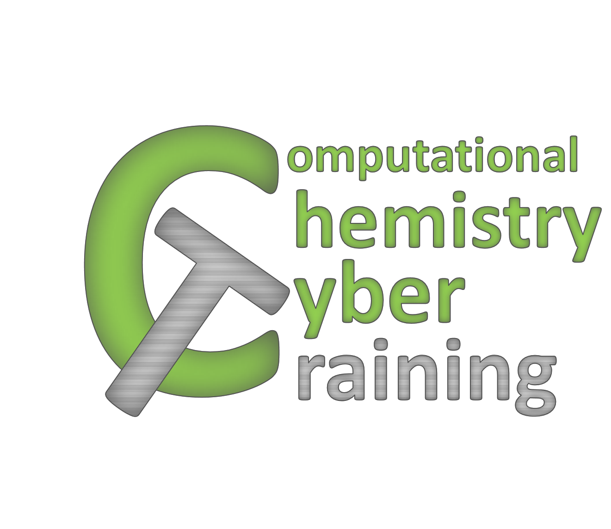

## **1. Nonadiabatic and Quantum Dynamics in Solar Energy Materials**
<div class="row">
<div class="col-12">
<p> Quantum dynamics is widespread in nature and are central to understading many materials and processes in chemical
and physical problems. The examples of these processes include excitonic and charge carrier dynamics, excitation
energy transfer, triplet energy transfer and photon upconversion, vibrational excitation energy relaxation,charge transfer,
photoinduced isomerization and reactive scattering, tunneling, spin dynamics and electronic of vibrational decoherence.
Modeling of these processes requires a quantum-mechanical description that goes beyond the common adiabatic or Born-Oppenheimer
approximations and accounts for nonadiabaticity. These methods can be generally called the Nonadiabatic Molecular Dynamics
(NA-MD) and has been one of the central themes of the group.</p>

<p>
The search for sustainable and clean energy technologies is an actively pursued research direction.
In particular, materials that can convert solar energy into electricity or chemical fuel, and further referred to as the
solar energy materials, have been in a spotlight of numerous research groups worldwide. In the quest for new materials
with remarkable properties, multiple underlying processes must be understood and optimized. Arguably, nonadiabatic
molecular dynamics (NA-MD) of excited states is one of the key players here, because it determines the outcomes of many
photoinduced processes, such as non-radiative electron-hole recombination, “hot” charge carrier cooling, charge transfer
and carrier trapping, excitation energy transfer and relaxation, exciton dissociation, or photoinduced isomerization.
Understanding the interplay of these processes is one of the keys to the rational design of new solar energy materials.
</p>
<p> In order to rationally design novel materials and to understand the details of operation of artificial systems, it is
imperative to gain comprehensive insights into mechanims of energy conversion, charge transfer, and mechanisms of
photoinduced molecular transformations. These processes are driven by complex interplay of electronic and nuclear degrees
of freedom and are intrinsically nonadiabatic. Computational modeling of these interactions and the dynamics of corresponding
excited quantum states requires explicit consideraction of electron-phonon interactions, involving multile electronic
or vibrational states.
</p>
<p>The Akimov group develops and uses a range of NA-MD methods to understand various aspects of quantum
nonadiabatic dynamics of excited states in a variety of applications and recent experimental studies.
Such studies concern a variety of classes of materials, such as: quantum dots and nanocrystals,
solid-state materials, organic and inorganic heterojunctions, 2D materials, perovskites,
dye-sensitized solar cell materials, small molecular systems as well as nanometer sized complexes. </p>
</div>
</div>
_____
## **2. Theory and Methodology for Quantum Dynamics**
In the ideal world, theoretical and computational tools should be able to guide experimental efforts, be predictive and fast. However,
one quickly realizes that modeling of almost any sufficiently complex material or phenomena hits the wall of the computational methods being
either too expensive or not accurate enough to be widely used. For this reason, the computation-enabled rational design of materials is still
a very challenging topic and a far-going endeavor for many scientists. This challenge is being constantly addressed by many researchers who
come up with a variety of approximations, however the applicability and reliability of such calculations is not always clearly understood. In
addition, the complexity of many problems pushes researchers to use such
In the Akimov group, we strive to enable efficient, accurate, and easy-to-use simulations of the dynamical processes
that occur in various materials. The presently-available methods are often very expensive to apply or/and may not always have the
desired capabilities. Addressing the most urgent, application-driven challenges in computations, we work along several parallel directions.
#### **2.1. Methodology assessment - en route to Jacob's ladder of nonadiabatic dynamics methods**
<div class="row">
<div class="col-12">

<p>The studies of the nonadiabatic (NA) and quantum dynamics (QD) methodologies constitute an active field of research.
Numerous innovative algorithms for fully quantum, semiclassical, and quantum-classical dynamics accounting for NA
and quantum nuclear effects are being proposed and reported regularly. Simultaneous with advancing to the field,
the expanding “zoo” of methods becomes too diverse and virtually unmanageable. The question “which method to choose?”
becomes a practical challenge not only to a software “user” (e.g., domain researcher), but often to an expert theorist.
This is a consequence of the absence of a comprehensive exploration of the methods’ applicability limits.
Among few, the Marcus (spin-boson) and Tully models are the most widely utilized. However, a great deal of other known
problems or tested models have been reported, but stay unnoticed in the reports of the new methodology developments. Thus,
the effective size of the benchmark sets used in NA/QD methods developments remain unprecedentedly small. This is in
contrast to the significantly more extensive electronic structure methods benchmark sets. The development of such a
comprehensive testbed would help standardize and assess new NA/QD methodologies when they are reported and therefore
would accelerate the development of better methods. Together with the comprehensive validation databases, one may be
able to build a **“Jacob’s ladder" of NA/QD methods"**, in analogy to that of DFT.</p>
<p>The Akimov group we conduct a systematic assessment of various options to conduct NA/QD simulations - the choice of the
hopping algorithm, decoherence, electron-phonon interactions, as well as the choices related to electronic structure and
nuclear dynamics calculations.</p>
</div>
</div>
#### **2.2. New methods and practical tools for NA-MD**
<div class="row">
<div class="col-12">
<p>In addition, to assessing the existing methodologies, we are fully engaged in the development of new techniques
to address a variety of problems that one faces when models NA-MD in materials. These issues include: the size limitations,
the time-scale limitations, a variety of "technical" know-hows needed for correct execution of the NA-MD, and many others.
Along the lines of the **size scale problems**, we develop a variety of approaches to enable such simulations in larger
(truly nanoscale) systems, including the "fragmentation" techiniques, semiempirical and density-functional
tight-binding approaches, as well as the dynamical methods that can circumvent the certain expensive computations, such
as in the Landau-Zener based NA dynamics. We also interface the NA-MD approaches with the codes
that can take advantage of the linear-scaling electronic structure calculations.</p>

<p> With regard to the **time scale** and **sampling** limitations, we develop formal and physics-motivated
machine-learning approaches to enable long-time simulations of multiple trajectories in NA-MD
calculations. Long trajectories are critical for being able to describe intrinsically slow processes such as
electron-hole recombination. Running many trajectories is needed to be able to estimate the error bars of
computed timescales. However, such calculations are too demanding to compute in a brute-force ways. Thus,
more clever approaches are needed - this is where we can learn from short dynamics and use this information to
give a peek to much longer evolutions. </p>
<p> Last but not least, often when one tries to implement/use mathematically-rigorous approaches, one may get into
troubles simply because the working procedures as implemented in software are very different from the idealistic
mathematical expectations (e.g. from the formulas). This class of problems includes the phenomena such as
**phase inconsistency** in numerically computing NA couplings, **spurious state identity changes**, the
interpretation of the wavefunctions yielded by the electronic structure codes (e.g. **1-electron vs. many-body**,
**all-electron vs. pseudized wavefunctions**, etc.), and so on. We strive to recognize these potential drawbacks of
the naive implementations and develop the innovative ways of solving them. Such type of problems usually
arise quite sporadically as we work of some "applied studies" and face these edifficulties.</p>
</div>
</div>
#### **2.3. Entangled trajectories theories**
<div class="row">
<div class="col-12">

<p>Capturing quantum effects with the formally classical formulations of the dynamics
based on multiple trajectories has fascinated many researchers. Such an approach helps one to understand the intricacies
of quantum mechanics in the intuitive and familiar language of classical mechanics. The trajectory-based approaches also
promise larger flexibility in reducing computational costs (once suitable approximations are made). In addition,
quantum-classical trajectry techniques may help one to resolve detils of reactive processes, providing detailes description
of potential outcomes of simulations.</p>
<p>Among the quantum non-local effects that can be captured with the help of trajectories are: zero-point energies, wavefunction
branching and decoherence, tunneling and superexchange. In order to capture such effects, we develop the **entangled Hamiltonian dynamics (ETHD)**
method. The method originates from rigorous quantum equations, known as Heisenberg equations of motion. These equations can be mapped
onto a classical Hamiltonian, which we use as the starting point of our dynamical procedure. The distinctive point of such effective
Hamiltonian is that it mixes up the trajectries in the ensemble, allowing them to communicate with each other, and hence mimic certain
non-local effects.</p>
</div>
</div>
____
## **3. Open-Source Software for Nonadiabatic and Quantum Dynamics**
<div class="row">
<div class="col-12">
<p>Modeling charge and energy transfer, dynamics of electronic or vibrational energy relaxation, and photoinduced
reactive processes require an explicit consideration of electron-phonon interactions and nonadiabatic effects in
the dynamics. Nonadiabatic molecular dynamics is the general methodology to account for such effects. There is a
large family of various NA-MD techniques, but the existing implementations are relatively scarce. Among the available
packages, there is another level of compications: some either too costly, others are limited in their applicability
to certain types of systems and processes. Furthermore, many implementations take a "black-box" approach, difficult
to extend, or may implement a limited number of developed algorithms.</p>

<p>In the Akimov group, we develop a variety of computational tools for NA-MD calculations and beyond, keeping the above points
in mind. We ahere to the concept of modular, transferable, open-source, and easy-to-use/easy-to-extend sofwtare.
The developed software serves as a platform for improving the efficiency and accuracy of the methodologies and as the
practical tools to drive the applied materials research. The packages are distributed at the
<a target="_blank" href="https://github.com/Quantum-Dynamics-Hub">Quantum Dynamics Hub
<img src="images/github-logo.png" alt="Quantum Dynamics Hub" width="60" height="60" border="0">
</a> page. To learn more about the software projects
distributed at Quantum Dynamics Hub, please visit the [official website](https://quantum-dynamics-hub.github.io/index.html)</p>
<p>As a backbone of all the methodology development and assessment efforts in the Akimov group, we
develop a modular open-source **[Libra](https://github.com/Quantum-Dynamics-Hub/libra-code)** code.
Libra is a comprehensive library for methodology development and practical (applied) calculations for both abstract
and atomistic models and systems. One can utilize the variety of the "building blocks" (functions, data types, workflows)
to to create and test new methodologies, be it anything related to the dynamics (classical or quantum) or to other kinds of
problems. The main use of Libra is perhaps in the realm of quantum-classical trajectory surface hopping or Ehrenfest
calculations, but one is not limited by this. Libra's functionality also includes: basic linear algebra and eigensolvers,
file processing utilities, molecular integrals (although not super-efficient at the moment), force fields, a number of
simple (e.g. semienpirical) electronic structure calculations, classical molecular dynamics, molecular structure building and
analysis tools, Gaussian wavepackets matrix elements, DVR and numericall exact quantum dynamics, dynamics of open quantum systems
via HEOM (hierarchy of equations of motion), a variety of surfaceh hopping and decoherences schemes, coupled trajectories methods,
and many more. Most of Libra's functionality is available at the C++ and Python levels. The latter helps streamline the methodology
development process. A number of the Python-only routines are designed for the workflow-level calculations and handling input/output
of a variety of external packages (e.g. DFTB+, QE, eQE, cp2k, GAMESS, Gaussain, LAMMPS, etc.). These capabilities enable
"applied" studies of atomistic systems.</p>
<p>Learn more about Libra on its dedicated [website](https://quantum-dynamics-hub.github.io/libra/index.html)</p>
<p>We have developed an extensive documentation, tutorials, and knowledge base for Libra users. Check out
<a target="_blank" href="https://github.com/compchem-cybertraining/Tutorials_Libra">Computational Chemistry CyberTraining

</a> resource
</p>
</div>
</div>